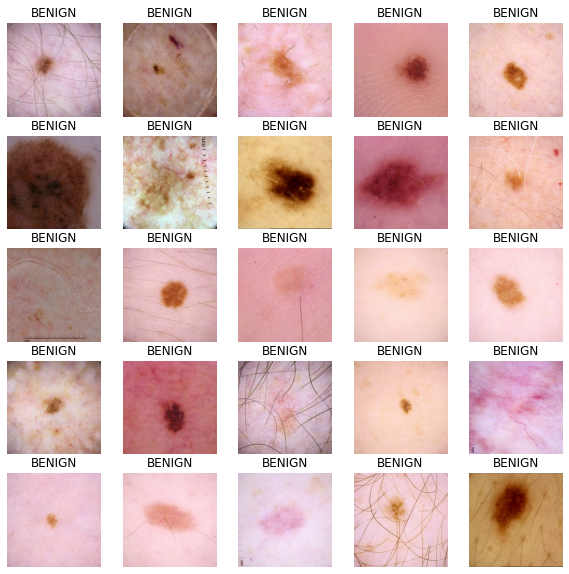
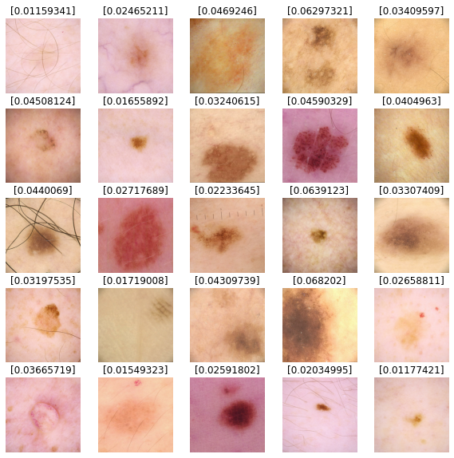

How to train a Keras model on TFRecord files
Author: Amy MiHyun Jang
Date created: 2020/07/29
Last modified: 2020/08/07

Description: Loading TFRecords for computer vision models.
Introduction + Set Up
TFRecords store a sequence of binary records, read linearly. They are useful format for storing data because they can be read efficiently. Learn more about TFRecords here.
We'll explore how we can easily load in TFRecords for our melanoma classifier.
import tensorflow as tf
from functools import partial
import matplotlib.pyplot as plt
try:
tpu = tf.distribute.cluster_resolver.TPUClusterResolver.connect()
print("Device:", tpu.master())
strategy = tf.distribute.TPUStrategy(tpu)
except:
strategy = tf.distribute.get_strategy()
print("Number of replicas:", strategy.num_replicas_in_sync)
Number of replicas: 8
We want a bigger batch size as our data is not balanced.
AUTOTUNE = tf.data.AUTOTUNE
GCS_PATH = "gs://kds-b38ce1b823c3ae623f5691483dbaa0f0363f04b0d6a90b63cf69946e"
BATCH_SIZE = 64
IMAGE_SIZE = [1024, 1024]
Load the data
FILENAMES = tf.io.gfile.glob(GCS_PATH + "/tfrecords/train*.tfrec")
split_ind = int(0.9 * len(FILENAMES))
TRAINING_FILENAMES, VALID_FILENAMES = FILENAMES[:split_ind], FILENAMES[split_ind:]
TEST_FILENAMES = tf.io.gfile.glob(GCS_PATH + "/tfrecords/test*.tfrec")
print("Train TFRecord Files:", len(TRAINING_FILENAMES))
print("Validation TFRecord Files:", len(VALID_FILENAMES))
print("Test TFRecord Files:", len(TEST_FILENAMES))
Train TFRecord Files: 14
Validation TFRecord Files: 2
Test TFRecord Files: 16
Decoding the data
The images have to be converted to tensors so that it will be a valid input in our model. As images utilize an RBG scale, we specify 3 channels.
We also reshape our data so that all of the images will be the same shape.
def decode_image(image):
image = tf.image.decode_jpeg(image, channels=3)
image = tf.cast(image, tf.float32)
image = tf.reshape(image, [*IMAGE_SIZE, 3])
return image
As we load in our data, we need both our X and our Y. The X is our image; the model
will find features and patterns in our image dataset. We want to predict Y, the
probability that the lesion in the image is malignant. We will to through our TFRecords
and parse out the image and the target values.
def read_tfrecord(example, labeled):
tfrecord_format = (
{
"image": tf.io.FixedLenFeature([], tf.string),
"target": tf.io.FixedLenFeature([], tf.int64),
}
if labeled
else {"image": tf.io.FixedLenFeature([], tf.string),}
)
example = tf.io.parse_single_example(example, tfrecord_format)
image = decode_image(example["image"])
if labeled:
label = tf.cast(example["target"], tf.int32)
return image, label
return image
Define loading methods
Our dataset is not ordered in any meaningful way, so the order can be ignored when loading our dataset. By ignoring the order and reading files as soon as they come in, it will take a shorter time to load the data.
def load_dataset(filenames, labeled=True):
ignore_order = tf.data.Options()
ignore_order.experimental_deterministic = False # disable order, increase speed
dataset = tf.data.TFRecordDataset(
filenames
) # automatically interleaves reads from multiple files
dataset = dataset.with_options(
ignore_order
) # uses data as soon as it streams in, rather than in its original order
dataset = dataset.map(
partial(read_tfrecord, labeled=labeled), num_parallel_calls=AUTOTUNE
)
# returns a dataset of (image, label) pairs if labeled=True or just images if labeled=False
return dataset
We define the following function to get our different datasets.
def get_dataset(filenames, labeled=True):
dataset = load_dataset(filenames, labeled=labeled)
dataset = dataset.shuffle(2048)
dataset = dataset.prefetch(buffer_size=AUTOTUNE)
dataset = dataset.batch(BATCH_SIZE)
return dataset
Visualize input images
train_dataset = get_dataset(TRAINING_FILENAMES)
valid_dataset = get_dataset(VALID_FILENAMES)
test_dataset = get_dataset(TEST_FILENAMES, labeled=False)
image_batch, label_batch = next(iter(train_dataset))
def show_batch(image_batch, label_batch):
plt.figure(figsize=(10, 10))
for n in range(25):
ax = plt.subplot(5, 5, n + 1)
plt.imshow(image_batch[n] / 255.0)
if label_batch[n]:
plt.title("MALIGNANT")
else:
plt.title("BENIGN")
plt.axis("off")
show_batch(image_batch.numpy(), label_batch.numpy())

Building our model
Define callbacks
The following function allows for the model to change the learning rate as it runs each epoch.
We can use callbacks to stop training when there are no improvements in the model. At the end of the training process, the model will restore the weights of its best iteration.
initial_learning_rate = 0.01
lr_schedule = tf.keras.optimizers.schedules.ExponentialDecay(
initial_learning_rate, decay_steps=20, decay_rate=0.96, staircase=True
)
checkpoint_cb = tf.keras.callbacks.ModelCheckpoint(
"melanoma_model.h5", save_best_only=True
)
early_stopping_cb = tf.keras.callbacks.EarlyStopping(
patience=10, restore_best_weights=True
)
Build our base model
Transfer learning is a great way to reap the benefits of a well-trained model without having the train the model ourselves. For this notebook, we want to import the Xception model. A more in-depth analysis of transfer learning can be found here.
We do not want our metric to be accuracy because our data is imbalanced. For our
example, we will be looking at the area under a ROC curve.
def make_model():
base_model = tf.keras.applications.Xception(
input_shape=(*IMAGE_SIZE, 3), include_top=False, weights="imagenet"
)
base_model.trainable = False
inputs = tf.keras.layers.Input([*IMAGE_SIZE, 3])
x = tf.keras.applications.xception.preprocess_input(inputs)
x = base_model(x)
x = tf.keras.layers.GlobalAveragePooling2D()(x)
x = tf.keras.layers.Dense(8, activation="relu")(x)
x = tf.keras.layers.Dropout(0.7)(x)
outputs = tf.keras.layers.Dense(1, activation="sigmoid")(x)
model = tf.keras.Model(inputs=inputs, outputs=outputs)
model.compile(
optimizer=tf.keras.optimizers.Adam(learning_rate=lr_schedule),
loss="binary_crossentropy",
metrics=tf.keras.metrics.AUC(name="auc"),
)
return model
Train the model
with strategy.scope():
model = make_model()
history = model.fit(
train_dataset,
epochs=2,
validation_data=valid_dataset,
callbacks=[checkpoint_cb, early_stopping_cb],
)
Downloading data from https://storage.googleapis.com/tensorflow/keras-applications/xception/xception_weights_tf_dim_ordering_tf_kernels_notop.h5
83689472/83683744 [==============================] - 3s 0us/step
Epoch 1/2
454/454 [==============================] - 525s 1s/step - loss: 0.1895 - auc: 0.5841 - val_loss: 0.0825 - val_auc: 0.8109
Epoch 2/2
454/454 [==============================] - 118s 260ms/step - loss: 0.1063 - auc: 0.5994 - val_loss: 0.0861 - val_auc: 0.8336
Predict results
We'll use our model to predict results for our test dataset images. Values closer to 0
are more likely to be benign and values closer to 1 are more likely to be malignant.
def show_batch_predictions(image_batch):
plt.figure(figsize=(10, 10))
for n in range(25):
ax = plt.subplot(5, 5, n + 1)
plt.imshow(image_batch[n] / 255.0)
img_array = tf.expand_dims(image_batch[n], axis=0)
plt.title(model.predict(img_array)[0])
plt.axis("off")
image_batch = next(iter(test_dataset))
show_batch_predictions(image_batch)
